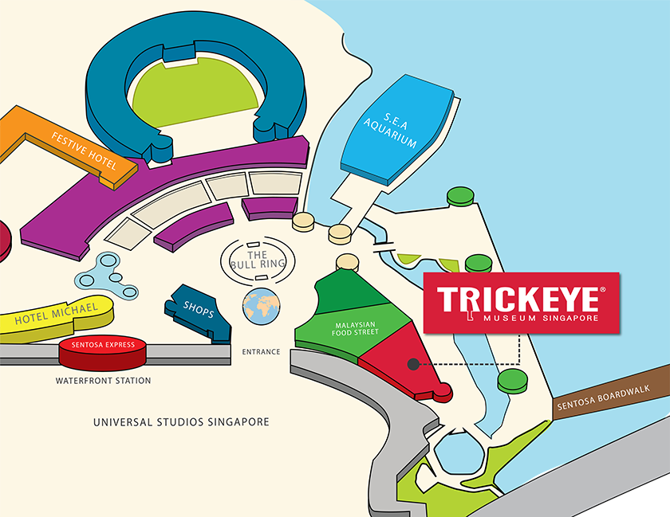
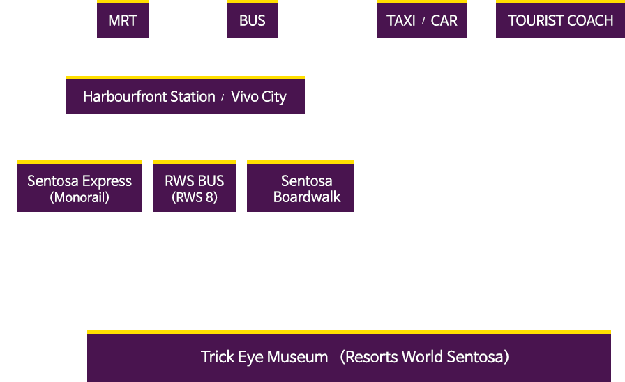

Being just a short distance away from famous attractions in Singapore, it is the best indoor experience.
Resorts World Sentosa, 26 Sentosa Gateway #01-43/44 Singapore 098138
※ Trick Eye Museum is located near Universal Studios and Malaysian Food Street. ※
※ Directions to Trick Eye Museum ※
Decide your mode of transport based on your preferred travelling time and transportation costs!
Take Exit E to VivoCity and proceed to level 3 to board the Sentosa Express. Alight one stop later at Waterfront Station. Walk straight about 3 minutes towards the Universal Studios Globe. Turn right upon seeing Insadong Korean restaurant and walk straight until you see Trick Eye Museum.
Take buses 65, 80, 93, 188, 855, 10, 30, 97, 100, 131, 143, 145 or 166 and alight at VivoCity. Board bus RWS8 from bus stop 14141 at VivoCity or bus stop 14121 at Merrill Lynch, Harbour Front. Alight at Resort world Sentosa's drop-off point.
Enter via The Forum and turn left to take the escalator up to level 1. Turn left and walk along the stretch of Candylicious and Din Tai Fung. Turn and Insadong Korean restaurant should be on your right. Walk straight for about 3 minutes and you will see Trick Eye Museum.
Proceed to level 1 of VivoCity and look for directions to the Boardwalk. Upon reaching the gantry at the entrance of Sentosa Island, keep left and walk straight towards Trick Eye Museum. Once you have passed the gantry, walk straight till the end and turn right.
Ask the driver to go to the entrance of Sentosa Casino and you will be dropped of at the Resort World Sentosa's drop off point. Enter via The Forum and turn left to take the escalator up to level 1. Turn left and walk along the stretch of Candylicious and Din Tai Fung. Turn right and Insadong Korean restaurant should be on your right. Walk straight for about 3 minutes and you will see Trick Eye Museum.
Upon entering Sentosa Gateway, keep to the left land and head down Ramp A. Keep right and look for the "Cars/Taxis" sign overhead. Follow the signs to B1 East Car Park and park in the red or blue zone.
Enter via The Forum and turn left to take the escalator up to level 1. Turn left and walk along the stretch of Candylicious and Din Tai Fung. Turn right and Insadong Korean restaurant should be on your right. Walk straight for about 3 minutes and you will see Trick Eye Museum.
※ For more information on parking, please refer to the RWS website